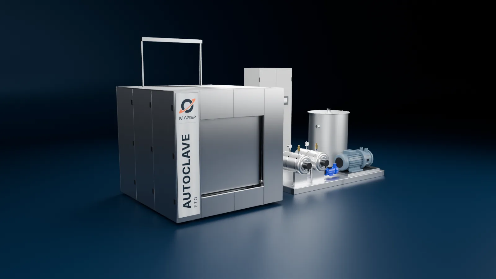
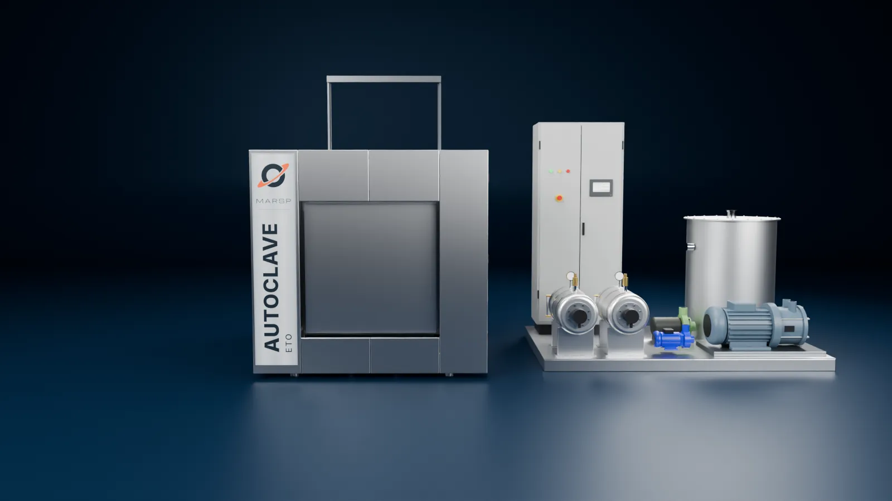
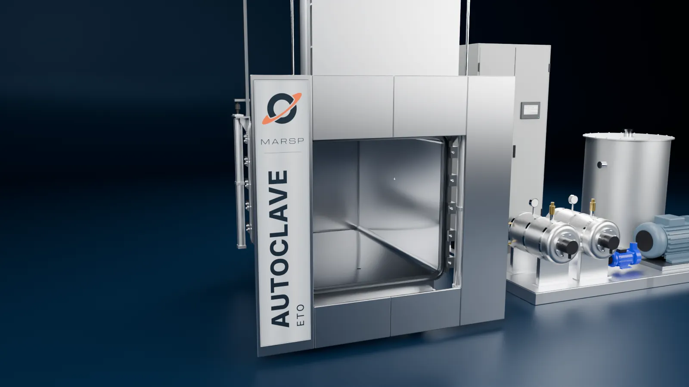
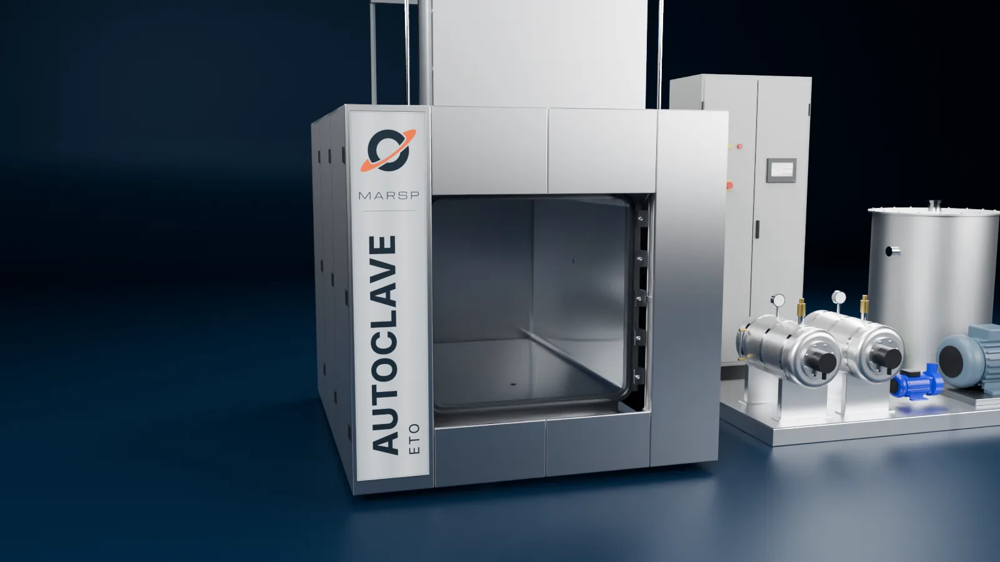
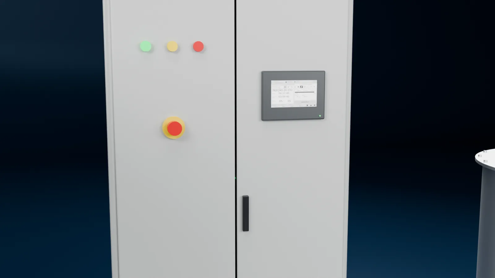
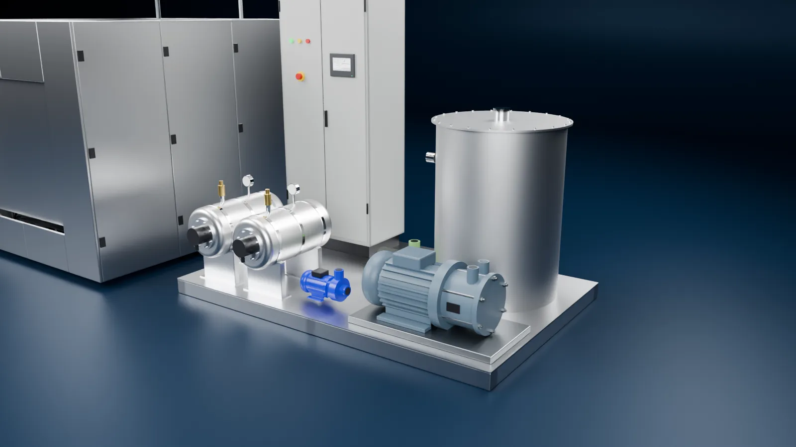
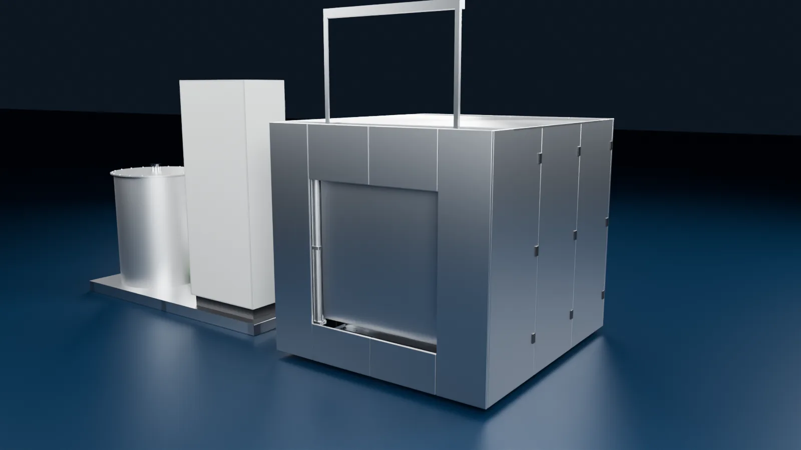

1 de 4
Automação AFR com ciclo rastreável
CLP, IHM e software de controle validável, com dados criptografados e auditoria de logs. Cada carga recebe um código para rastrear o lote, e o supervisório guarda os ciclos em nuvem, com backup.

MSP 1500-E
Esterilização por óxido de etileno em câmara de 1500 litros, entregue instalada, qualificada e liberada para uso.
Carenagem em aço inox 430 escovado sobre isolamento de lã de rocha.
Bomba de vácuo de 5 cv, gerador de vapor e painel de comando vêm numa plataforma ao lado.
A segunda porta fica do outro lado da câmara.


1 de 4
CLP, IHM e software de controle validável, com dados criptografados e auditoria de logs. Cada carga recebe um código para rastrear o lote, e o supervisório guarda os ciclos em nuvem, com backup.
2 de 4
O vaso passa por ensaio de líquidos penetrantes nas soldas e teste hidrostático. A LabQuali faz QI, QO e QD e valida o software. Equipamento, automação e documentação de qualificação chegam num fornecimento só.
3 de 4
Duas portas em inox 316L de 8 mm, uma em cada lado da câmara de 1000 × 1000 × 1500 mm. Sobem por pistões pneumáticos, com contrapesos de segurança, e vedam por guarnição pressurizada.
4 de 4
Chapa de 6 mm com polimento sanitário espelhado. Por fora, uma camisa em gomos de inox 304, com bomba própria para circular água.




Imagens ilustrativas. Dimensões, acabamentos e disposição dos componentes do equipamento fornecido podem diferir.
MSP 1500-E
| Modelo | MSP 1500-E, dupla porta guilhotina vertical |
|---|---|
| Volume da câmara | 1500 litros |
| Dimensões internas (L × A × P) | 1000 × 1000 × 1500 mm |
| Câmara interna | Inox 316L de 6 mm, polimento sanitário espelhado |
| Câmara externa (camisa) | Gomos de inox 304 de 4 mm |
| Portas | Duas, em inox 316L de 8 mm, guilhotina com abertura para cima, pistões pneumáticos e contrapesos de segurança |
| Vedação das portas | Guarnição cilíndrica oca, pressurizada |
| Pressão máxima de trabalho admissível (PMTA) | 1,2 kgf/cm² |
| Pressão de teste hidrostático | 1,56 kgf/cm² |
| Pressão de trabalho | 0 a −0,90 kgf/cm² |
| Eficiência de solda | Costado 0,70 · tampos 1,0 |
| Sobre-espessura para corrosão | 2,0 mm (costado e tampos) |
| Conexões | Tri-clamp para ETO, N2, vapor, ar filtrado, validação, sensor de umidade e transmissor de pressão |
| Isolamento térmico | Lã de rocha, acabamento em alumínio |
| Carenagem | Inox 430 escovado |
| Normas de projeto | ASME Seção VIII, Divisão 1 · NR-13 |
| Bomba de vácuo | 5 cv, com reservatório vertical de água em inox 316L de 4 mm |
|---|---|
| Gerador de vapor | Boiler em inox 304 de 4 mm, Ø 300 × 600 mm, 45 litros; bomba d'água de 0,5 cv |
| Circulação da camisa | Bomba d'água de 1 cv |
| Gás | Aquecedor de gás |
| Aeração mecânica | Filtragem de ar com filtro HEPA |
| Ligações | Mangueiras flexíveis em aço inox |
| Controle | CLP e IHM, válvulas com atuadores pneumáticos, válvulas de segurança |
|---|---|
| Instrumentação | Pt-100, transdutor de pressão, medição de umidade |
| Admissão do ETO | Por pesagem |
| Software | Validável, com dados criptografados e auditoria de logs |
| Supervisório | Gestão dos ciclos em nuvem, backup e impressão digital |
| Ensaios | Líquidos penetrantes nas soldas, teste hidrostático |
| Qualificação | QI, QO e QD, validação do software, inspeção de segurança NR-13 |
| Data book | Prontuário do vaso, certificados de calibração, relatórios de QI, QO e QD, rastreabilidade da matéria-prima, ART |
A autoclave trabalha com outros três equipamentos MARSP. Cada um ganha página própria quando o modelo estiver pronto.
 Em breve
Em breve
 Em breve
Em breve
 Em breve
Em breve
Diga onde a autoclave vai operar e quais redes já existem no local (ETO, N2, ar comprimido e água).